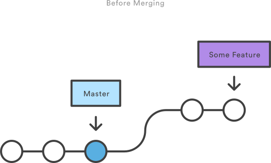
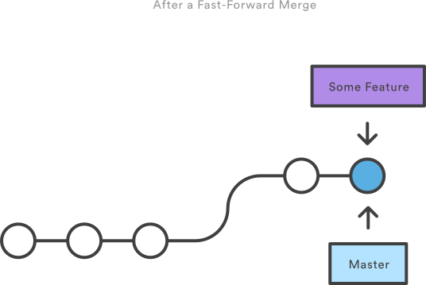
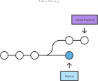
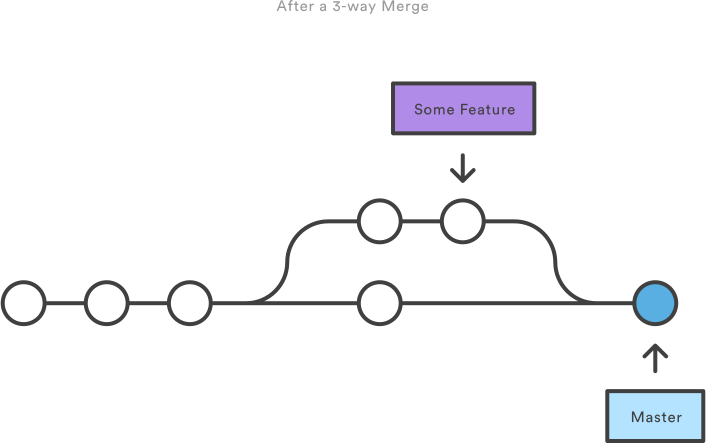
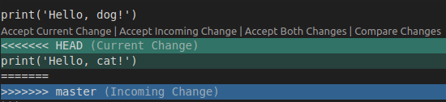
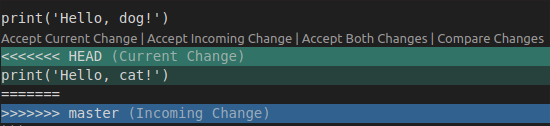

# Computational Science Seminar
### Branching and merging with Git
Tom Russell & Roald Lemmen
---
# Agenda
1. introduction
1. git recap
1. practical 1 (30 min)
1. branching and merging
1. practical 2 (45 min)
1. next steps
---
## Resources
These slides are available from:
- https://nismod.github.io/presentations/git-branching-merging.html
An introduction to Git is available from:
- https://nismod.github.io/presentations/a-short-intro-to-git.html
Further resources are available from the website:
- https://nismod.github.io/git-novice/
A list of commands used in the session is available for quick reference:
- https://nismod.github.io/git-novice/commands/
---
# Recap
* Today's focus is branching and merging, but we will recap as well
* 2 hours available for both theory and practice
* Version control (and git in particular) has a steep learning curve – do ask
for help getting started
* There are many resources for self learning
* Software Carpentry
* Courses within the University of Oxford / Lynda.com
* The Research Support team in SOGE
---
## What is Git?
* version control system
* keep track of changes
* Other examples:
* File naming: program_v1.py, program_v2.py
* Microsoft Word Track changes
* Other repository systems such as: Subversion (SVN) or Concurrent Version System (CVS)
---
## The git architecture
* The Git 'Three-tree-architecture'

---
## The git workflow
- **commit**
a small set of changes, which accumulate to make a **history** of commits
--
- **repository**
a place for a project
--
- **remote** repository
a place to share a project
--
- **branch**
a way to separate work on new versions, bug-fixes or features
--
- **merge**
a way to incorporate changes from one branch into another
---
## Commits

---
## Repository

---
## Remote

---
## Remote

---
## Remote

---
## Branch

---
## Merge

---
## Summary
Starting out
`git init`
`git clone`
--
Committing
`git add ...`
`git commit -m "..."`
--
Information
`git status`
`git log`
---
## Summary
Remotes
`git push`
`git pull`
--
Branches
`git branch ...`
`git merge ...`
`git checkout ...`
--
**......Questions?**
--
...then let's get ready
---
# Practical 1
## Installing Git
Windows:
* Download and install:
`http://git-scm.com/download/win`
Linux (most debian-based distributions)
* Download and install:
`apt-get install git-all`
Others:
https://git-scm.com/book/en/v2/Getting-Started-Installing-Git
---
# Practical 1
## Configuring Git
```
git config --global user.name "Roald Lemmen"
git config --global user.email "roald.lemmen@ouce.ox.ac.uk"
git config --global color.ui "auto"
git config --global core.editor notepad` or alternative editor
```
* These settings are stored in stored in $root/.git/.gitconfig
* The email address should be the same as the one configured in your remote repository (such as Github)
---
# Practical 1
## Line endings
Windows and Mac/Linux handle line endings differently, and we want to be able to
share files between operating systems.
Git has a setting that _should_ let us set a sensible default.
On Windows, set it to `true`:
```bash
git config --global core.autocrlf true
```
On Mac or Linux, set it to `input`:
```bash
git config --global core.autocrlf input
```
---
# Practical 1
## Objectives
* Make sure all computers are setup correctly
* Recap the Git Basics
## Exercise
We are are looking for cool places in Oxford. We would like to ask the community (you!), to help us develop a map of recommendations. This can be anything, from a good bar, restaurant, activity to a museum.
```
Assignment: Add 5 recommendations to the map
```
Gitlab repository: https://gitlab.ouce.ox.ac.uk/mert2014/topic-map.git
Find lat-lon coordinates: http://geojson.io/
---
# Branching and merging
Objectives:
* Gain a understand of Git commit-identifier and HEAD
* Gain a deeper understanding of branching and merging
* Demonstrate branch, merge and merge conflicts
---
## Commit identifiers (Hash) values in Git
Each commit contains
* Metadata
* File changes
* Parent identifier - SHA (Secure Hash Algorithm)
 ---
## HEAD in Git
How does git know what branch you are currently on?
* Git keeps a special pointer called HEAD
* HEAD is a reference to the identifier of the last commit in the currently checked-out branch
---
## HEAD in Git
How does git know what branch you are currently on?
* Git keeps a special pointer called HEAD
* HEAD is a reference to the identifier of the last commit in the currently checked-out branch
 ---
## HEAD in Git
* The HEAD moves forward with each commit
* HEAD helps easily switch your work environment to other branches
---
## HEAD in Git
* The HEAD moves forward with each commit
* HEAD helps easily switch your work environment to other branches

---
## Basic branching
Create a new branch
`git branch ...`
--
Show branches
`git branch`
--
Checkout a branch
`git checkout ...`
--
Make a change, stage the change and commit
`git add ...`
`git commit -m "..."`
--
(Optional) Change in-between branches
`git checkout ...`
---
## Basic merging
Check out the receiving branch
`git checkout ...`
--
Merge changes into the receiving branch
`git merge ...`
---
## More about merging
Two types of merging:
--
* Fast-forward merge
* If no commits have been made to receiving branch since branching
* Append commits on tip of the receiving branch
* No additional commit will be made
---
# Fast-forward merge

---
# Fast-forward merge

---
## More about merging
* True merge
* If additional commits were made to the receiving branch
* and git can solve the merge by an inbuilt strategy
* Merge commit will be made
---
## More about merging

---
## More about merging

---
## More about merging
* But what if git can't solve the merge?
--
 --
* Merge conflicts
* Branches have conflicting modifications in a file
* Error message will pop up (CONFLICT (content): Merge conflict in ...)
* Git marks the conflict in file
---
## Merge conflicts
Three options in case of a merge conflict:
* 1) abort merge to return to stage before merge attempts
`git merge --abort`
--
* 2) solve merge manually (edit temporary file, remove flags and save)
`git add `
`git commit -m "Merged branch manually"`
--
* 3) use merge tool
`git mergetool --tool`
---
## Merge conflicts
* Git will mark the file
```
print('Hello, dog!')
<<<<<<< HEAD
print('Hello, cat!')
=======
>>>>>>> master
```
--
* Which can just be resolved using a standard text editor
--
* Or a more advanced one with support for this, such as Visual Studio Code:

---
# Practical 2
## Objectives:
* Understand the Git workflow
* Practice checkout, commit, branching and merging
* Learn how to resolve merge conflicts
* Learn how to contribute to a Git project
## Exercise
```
Assignment: We would like to ask your help, to rate the contents on the map.
Change the rating to whatever you like, and merge this into the master branch.
```
---
## Git workflow
* https://guides.github.com/introduction/flow/
---
## Git Documentation
`git --help`
--
* Merge conflicts
* Branches have conflicting modifications in a file
* Error message will pop up (CONFLICT (content): Merge conflict in ...)
* Git marks the conflict in file
---
## Merge conflicts
Three options in case of a merge conflict:
* 1) abort merge to return to stage before merge attempts
`git merge --abort`
--
* 2) solve merge manually (edit temporary file, remove flags and save)
`git add `
`git commit -m "Merged branch manually"`
--
* 3) use merge tool
`git mergetool --tool`
---
## Merge conflicts
* Git will mark the file
```
print('Hello, dog!')
<<<<<<< HEAD
print('Hello, cat!')
=======
>>>>>>> master
```
--
* Which can just be resolved using a standard text editor
--
* Or a more advanced one with support for this, such as Visual Studio Code:

---
# Practical 2
## Objectives:
* Understand the Git workflow
* Practice checkout, commit, branching and merging
* Learn how to resolve merge conflicts
* Learn how to contribute to a Git project
## Exercise
```
Assignment: We would like to ask your help, to rate the contents on the map.
Change the rating to whatever you like, and merge this into the master branch.
```
---
## Git workflow
* https://guides.github.com/introduction/flow/
---
## Git Documentation
`git --help`
Git manual
- https://git-scm.com/docs/git
Git book
- https://git-scm.com/book/en/v2
Cheatsheet from Github
- https://education.github.com/git-cheat-sheet-education.pdf
---
## Thanks!
Questions?
[https://nismod.github.io/presentations/a-short-intro-to-git.html](https://nismod.github.io/presentations/a-short-intro-to-git.html)
tom.russell@ouce.ox.ac.uk
roald.lemmen@ouce.ox.ac.uk